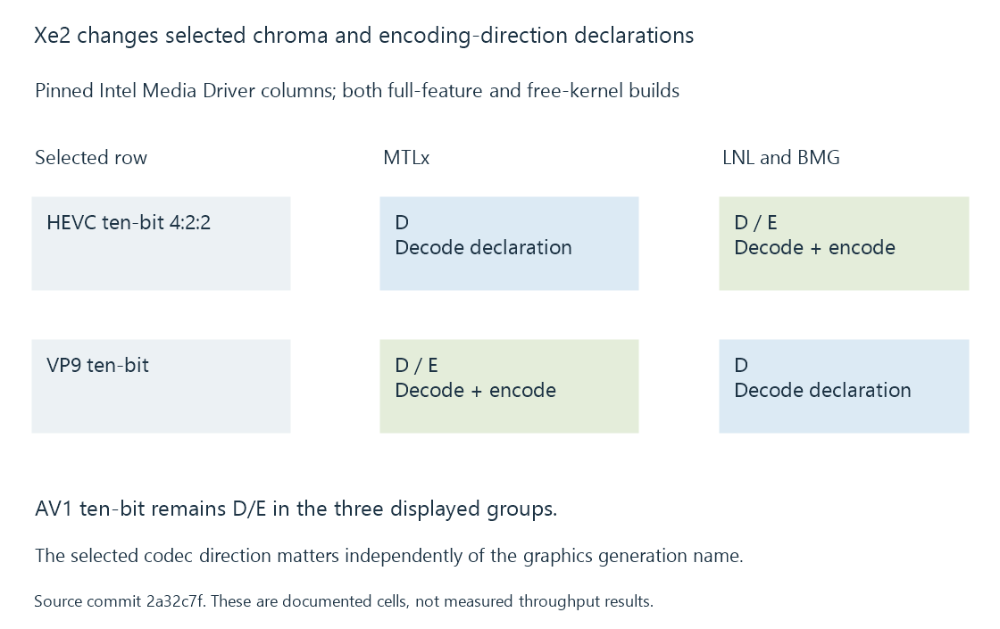

Intel Xe2 media capabilities: Lunar Lake and Battlemage
Lunar Lake and Battlemage have separate Intel driver columns whose format/direction declarations include AV1 and differ from earlier groups in selected HEVC and VP9 rows.
Lunar Lake and Battlemage appear as separate LNL and BMG columns in the pinned Intel Media Driver table. Their selected entries provide a useful example of how a newer media path can change several capabilities rather than merely extend one list.
The graphics-family term Xe2 supplies architectural context. The operation and its implementation declaration remain the specific media evidence.
Compare selected rows directly
In this snapshot the displayed rows agree between LNL and BMG:
| Configuration row | LNL and BMG: Full-Feature / Free-Kernel | MTLx comparison |
|---|---|---|
| AVC | D/E in both | D/E |
| HEVC 10-bit | D/E in both | D/E |
| HEVC 10-bit 4:2:2 | D/E in both | D |
| AV1 10-bit | D/E in both | D/E |
| VP9 10-bit | D in both | D/E |
The entries retain the source's D/E legend. They describe the named driver rows, not a completed native profile/configuration test or every application's exposed output.

A newer column is not simply a superset
The VP9 ten-bit row is a concrete example: the snapshot lists decoding for LNL/BMG while MTLx includes an encoding entry.
A workload that specifically needs VP9 output therefore asks a different question from one decoding VP9 input. Replacing the source/target with AV1 gives another declared operation set.
This matters when comparing an Emby job or a prepared-media workflow. The target codec is part of the comparison, not merely a consequence of the graphics-generation label.
Chroma needs its own query
A HEVC Main 10, 4:2:0 source and a ten-bit 4:2:2 source are different encoded configurations. Their usable API profiles, picture formats and output constraints need to match the requested direction.
The source table provides the selected declarations to investigate. The runtime's native capability and initialization results establish the usable detailed configuration.
Keep integrated and discrete resources identified
Lunar Lake and Battlemage also have different product/resource arrangements. The selected driver/device context, picture storage and consumers determine whether processing remains on compatible resources or needs another handoff.
An application can use the shared interface family without using the same frame route on both products. Driver-dependent capabilities develops the implementation side of that comparison.
See Also
- Intel Xe-LPG media capabilities: Meteor Lake and Arrow Lake
- Intel Arc Alchemist media capabilities
- How to read a hardware codec support matrix
- Intel VPL and the oneVPL name
- Driver-dependent media capabilities